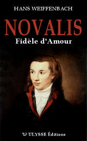

|

|
NOVALIS, Fidèle d'Amour
Hans Weiffenbach
(pub. ULYSSE)
Language: French
|
|
THE AUTHOR
Biography: Hans Weiffenbach was born in Trier, Germany, in 1949. A former Professor of Philosophy at the University of Bonn, his first work, published in 1989, was dedicated to Petrarch. He has since published several biographies, essays and collections of poetry. Novalis, Fidèle d'Amour is his ninth book. He has also translated several works by French and Italian authors into his native German. He is a member of the European Poetry Academy, the German PEN Centre, and the Humboldt Society. He currently lives in southern Germany, working as a writer. He also works with Süddeutschen Rundfunk (southern German public radio service).
Bibliography:
Francesco Petrarca (1989)
An anthology of German poetry (1991)
Dante Alighieri: Biography (1992)
Poems in prose (1993)
The Romantic movement in Germany (1995)
From poor Bertholt Brecht… (1998)
Christian Friedrich Hebbel, Requiem (2000)
Hölderlin, poet of the new gods (2002)
THE BOOK
Summary: Novalis (real name Friedrich von Hardenberg) was born on 2nd May 1772 in Oberwiederstedt, Saxony. He was born into an ancient, noble, and pious family, bearing the Latin name Novalis. Novalis, the eldest of eleven children, began his education at his parents’ home with visiting tutors; this early solitude helped to foster his dreamy temperament. Thereafter, fuelled by academic curiosity, he went on to study law, science, history and philosophy at the University of Jena, where he was tutored by Schiller and began his friendship with Fichte and Friedrich Schlegel. He continued his studies in Leipzig, then in Wittenberg, heading towards a career in engineering. In 1794, however, he finally began a career in administration. The same year, he fell in love with Sophie von Kühn, a young girl of thirteen, who died in 1797 after a long illness. After this crushing episode, the poet lost his zest for life. More than ever, he began to take refuge in his love of God, with a zeal which was more pantheist than Christian. In 1798, he decided to kick-start his own life again, and was engaged to Julie von Charpentier. She would later prove the inspiration for the character “Cyane” in Henry of Ofterdingen. Novalis died from tuberculosis on 25th March 1801.
Commentary: In this complete and fully illustrated biography of Novalis, Hans Weiffenbach investigates the relationship between the German poet and the “Faithful to Love” organisation, a secretive initiatory sect from the Middle Ages that has survived right up to the present, albeit under several different names. The author makes specific comparisons between Novalis’ initiation and that of Dante, a well-known member of the sect.
In the relationship between Dante and Beatrice, Love is considered their Master, by virtue of the similarities that exist between Beatrice, the Italian poet’s beloved, and Love. The entire mystery of "Faithful to Love " is encapsulated in this relationship. The relationship between Dante and Beatrice is a loving one, whilst that between Dante and Love is a master/disciple relationship. The similarity which exists between Beatrice and Love signifies that Beatrice is, to use Novalis’ own term, “the embodiment” of Love. This is the same relationship which Novalis himself faces upon the death of his fiancée, Sophie. It does not represent the destruction of human love; on the contrary, the human love portrayed achieves completeness. Thus the "death" of the beloved – which provides symmetry to the initiatory death of Love’s disciple – represents the first, “initiatory” stage of devotion to Love, where Love becomes the earthly master of the initiated.
In this biography, Hans Weiffenbach demonstrates that Novalis is among the few “who understand the mystery of Love” (again to use his own terms), and who exercise their vocation through secret, often poetic works. These individuals, be they poets or theosophists, can be called Love’s disciples, by virtue of their vocation of “Faith and Love” (see below). They could also be termed followers, having achieved that greater Orient which is the Orient of the soul.
|
THE “FAITH AND LOVE” CIRCLE
The "Faith and Love" Circle is for those whose admiration for the works of the German Romantic poet Novalis goes beyond pure literary appreciation.
The Circle does require initiation of its members, but it is neither a secret society nor a lodge. The Circle comprises several smaller “circles”, each one catering for its members’ differing levels of understanding of the teaching, in the secret of their heart, that Friedrich von Herdenberg’s singular destiny provides to those who immerse themselves in the intimacy of his work.
That’s what being a member of this Circle means!
For two centuries, the Circle has called for attention to be focused on the “mysterious journey inwards”, and its work has been the catalyst for many people to gain a better understanding of themselves. The main question here, however, is the intimacy of love:
“There are very few / Who know the mystery of love / Who live through the dissatisfaction / And the eternal thirst.”
Through the strength of their love for his work and for the man himself, there are some who have become Love’s disciples themselves. If these people share the poet’s secret affiliation with the Order of Faith and Love, it is generally in the loneliness of their hearts.
It is precisely these people for whom the “Faith and Love” Circle exists.
As a result, the “Faith and Love” Circle brings together the small number of individuals who have been initiated as Love’s disciples by Novalis – be it through his work or through his personality. These individuals may rightly be termed Love’s Disciples, whether they have reached this heightened level of awareness and understanding or not:
“Heaven is the perfect life”
The members of the Circle communicate discreetly with each other by way of a monthly “Letter”: "Many things are too delicate to think about; many more are too delicate to talk about."
(Source: jm.saliege.com)
|
FOR MORE INFORMATION:
|
By Didier Roy
|
{kind=link}